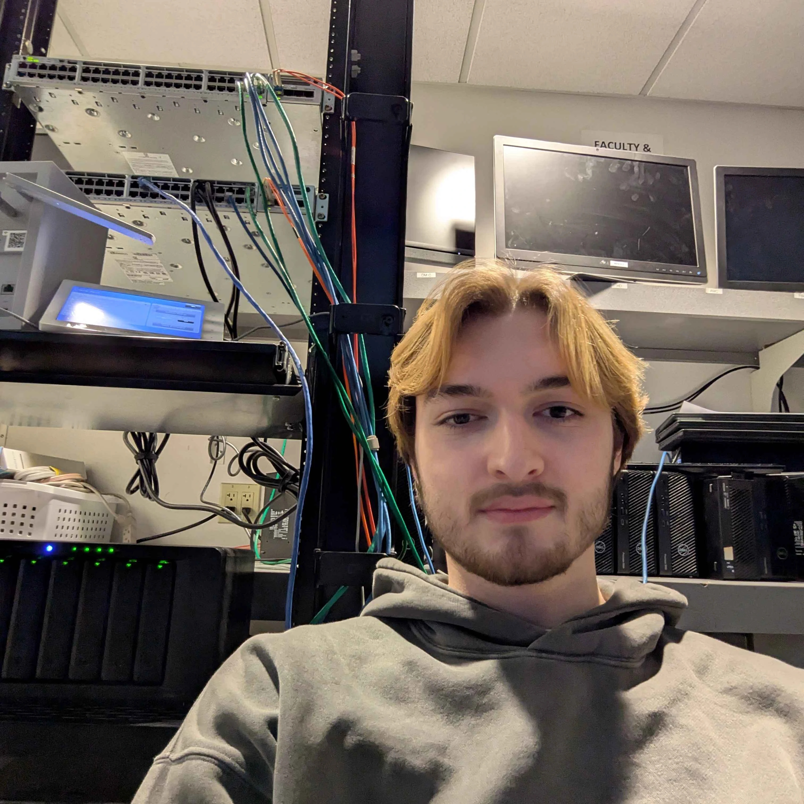

// hello world
> cybersecurity student & developer

currently studying
Under-grad [Cyber Security]
Human Computer Interfaces
Distributed Systems
Howdy, I'm Andrew, a cybersecurity undergrad who likes building things as much as breaking them. This site is a living record of what I'm working on and thinking about. More to come as projects and notes pile up.
Andrew Cappelli
Cybersecurity student and IT professional with hands-on experience securing and maintaining enterprise network infrastructure. Currently pursuing a B.S. in Cyber Threat Intelligence and Defense, with coursework spanning network security, digital forensics, and wireless architecture. Dual focus on offensive and defensive security: building, breaking, and hardening systems in both academic and production environments.
IT & Security Services LLC, Providence, RI
Johnson & Wales University, Providence, RI
Johnson & Wales University, Providence, RI
Relevant Coursework: Network Security, Cyber Defense, Computer Forensics, Wireless Architecture